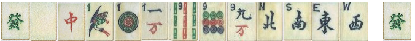
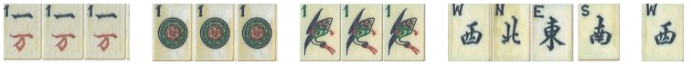

MAH JONG HANDS - NEWS
(As listed in Max Robertson's book
, 2007 edition)
8.Wriggling snake A run of tiles 1 to 9 in one suit only + NEWS + and any one of these 13
tiles to be paired. Last tile picked up can be a discard.
:: clean ; form: run of 9 + NEWS + 1 (matching any of 13)

19.Unique wonder. One of each of the honour tiles plus any tile paired.

23.Windy dragons. 2 pungs (not kongs) of any of the dragons plus a pair of each of the winds.
:: WD only ; form: Pd + Pd + WW + SS + EE + NN
(or Pd + Pd + NEWS+NEWS)

24.Windy ones. A pung/kong of the ones in each suit and one each of the winds plus any wind paired.
:: 1's and W's ; form: 111(circle),111(bamboo),111(chars) +NEWS +any W

25.Windy nines. Similar to windy ones ,but uses nines of each suit.
:: 9's and W's ; form: 999(circle),999(bamboo),999(chars) +NEWS +any W

31.THE FOUR BLESSINGS. Pungs/kongs of each of the four winds plus a pair of anything.
:: clean ; form:PK of each wind + any pair
i.e: NEWS+NEWS+NEWS+pair

39.WINDY CHOWS. A chow in each suit plus one of each wind with any wind paired.
:: EVERY suit + winds ; form: C1+C2+C3 + NEWS + any wind

41.GRETA'S GARDEN. A run of 1 to 7 plus one of each wind and dragon.
:: clean ; form:1234567 + NEWS + GRW

The following shorthand used for ease of description:
P Pung
K Kong
C Chow
PK pung/kong
PKC pung/kong/chow
WD winds/dragons
PK1 PK from suit 1
PK2 PK from suit 2
PK3 PK from suit 3
(1,2,3 are the main suits of bamboo, circle, character)
Clean hand = one suit & WD
Superclean hand One suit no WD
NEWS North wind + East wind + West wind + South wind
G = green dragon
R = red dragon
W = Red dragon
GRW Green dragon + Red dragon + White dragon